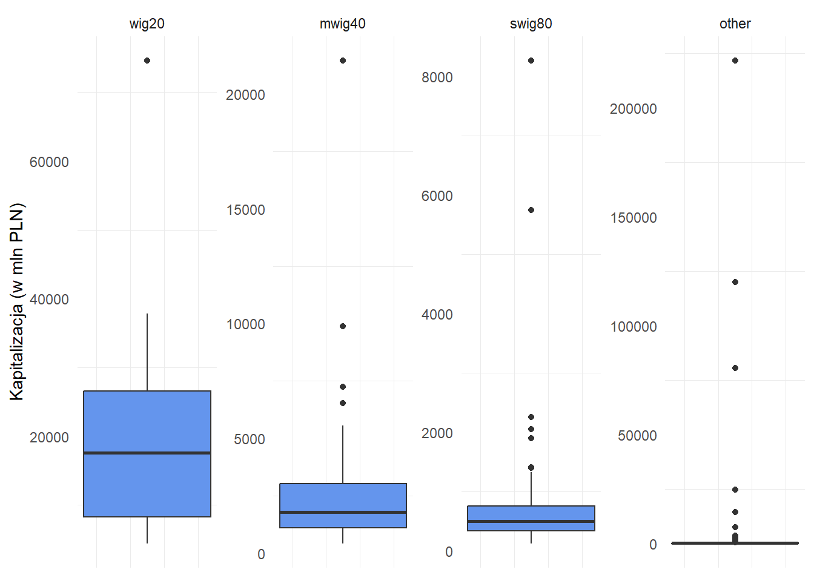

Zgodnie z danymi prezentowanymi przez Giełdę Papierów Wartościowych, na głównym rynku notowanych jest ponad 400 podmiotów. Szczegółowe poznanie każdej ze spółek z uwagi na ich liczbę wydaje się niewykonalne, jednakże posiadanie ogólnej wiedzy na temat składowych indeksów stanowi przydatną wiedzę, chociażby w kontekście wstępnej selekcji spółek w jakie chcemy zainwestować. Niniejszy wpis posłuży więc poznaniu struktury GPW i jej indeksów, zarówno pod kątem działalności spółek, jak i wielkości wyrażonych kapitalizacją oraz wartością księgową.
W analizie wykorzystane zostały dane opublikowane na stronie GPW.PL. Obejmują one informacje o przynależności każdej ze spółek do poszczególnych indeksów, reprezentowany przez nie sektor oraz dane finansowe, zgodne ze stanem na koniec 2022 roku - kapitalizacje rynkową (w mln PLN), wartość księgową (w mln PLN) oraz wskażniki Cena / Wartość księgowa i Cena / Zysk.
Ogólne spojrzenie na całe GPW
Pod kątem kapitalizacji, wyróżniają się cztery największe spółki Santander i Unicredit z sektora bankowego (kolejno 222 i 120 mld PLN kapitalizacji), przedstawiciel sektora energetycznego Cez (kapitalizacja na poziomie 80 mld PLN) oraz PKN Orlen (75 mld PLN kapitalizacji). Kolejna pod tym kątem spółka, PKO BP to “jedynie” 38 mld PLN kapitalizacji. Pierwszy z poniższych histogramów powstał już po wykluczeniu wartości odstających w postaci czterch największych, wymienionych wyżej spółek:
Pierwszy z histogramów, obejmujący spółki o kapitalizacji od 0.5 mln PLN do 38 mld PLN, wskazuje że rozpiętość w tym aspekcie na polskiej giełdzie jest znacząca i wykres jest trudny do rozczytania, mimo wykluczenia z niego najwiekszych podmiotów. Jednocześnie widać, że największa koncentracja spółek występuje po lewej stronie wykresu. Mamy zatem około 20 spółek bardzo dużych w skali krajowej - ich kapitalizacja przekracza 10 miliardów złotych, a po drugiej stronie mamy sporą grupę (280) spółek małych i średnich o kapitalizacji do 500 mln PLN, przy czym rozkład koncentruje się po lewej stronie. Oczywiście należy pamiętać, że aptekarska precyzja w tej analizie nie do końca ma sens, bowiem kapitalizacja zmienia się z każdą sesją giełdową.
Z uwagi na to jak bardzo ponad resztę wybija się grupa spółek o kapitalizacji do 50 milionów PLN, sprawdźmy dokładniej te podmioty.

Podsumowując, najmniejsze spółki, o kapitalizacji do 50 milionów złotych, to przede wszystkim liczna reprezentacja spółek z sektora produkcji przemysłowej (25) oraz finansów (31). W zestawieniu pojawiają sę także spółki działające w obszarze technologii, dóbr konsumpcyjnych, handlu i usług. Pojawią się także pojedynczy reprezentanci z branży chemicznej, surowcowej, paliwowej oraz energetycznej.Z uwagi, że wymienione na początku dwa sektory dość mocno odstają liczebnością od pozostałych, sprawdźmy jak wygląda ich struktura biorąc pod uwage drugi poziom klasyfikacji branżowej:

Wśród małych spółek z obszaru finansów, zdecydowanie najmocniej reprezentowani są przedstawiciele nieruchomości oraz ogólnie pojętej działalności inwestycyjnej. Jeśli natomiast o produkcji przemysłowej i budowlano-montażowej mowa, small-capy są najmocniej reprezentowane przez spółki z obszaru budownictwa oraz przemysłu elektromaszynowego.
Struktura wielkościowa i brażowa indeksów WIG20, mWIG40 i sWIG80
O wielkości spółki może świadczyć sam fakt przynależności do jednego z indeksów: WIG20 (spółki duże), mWIG40 (spółki średnie), sWIG80 (spółki małe). Sprawdźmy zatem o jakich wartościach mowa w kontekście tychże indeksów, a także jakie branże są reprezentowane przez przedstawicieli poszczególnych.

| index | min | Q1 | Q2 | Q3 | max |
|---|---|---|---|---|---|
| wig20 | 4410.12 | 8228.925 | 17596.69 | 26520.938 | 74578.92 |
| mwig40 | 420.86 | 1095.003 | 1794.75 | 3012.887 | 21440.48 |
| swig80 | 122.02 | 338.005 | 493.89 | 752.545 | 8265.22 |
| other | 0.50 | 24.570 | 65.06 | 175.000 | 221686.10 |
Zgodnie z przewidywaniami, każdy kolejny indeks reprezentowany jest przez mniejsze spółki. W przypadku WIG20 mediana kapitalizacji to 17 596 mln PLN, mwig40 1 794 mln PLN, za swig80 notuje Q2 na poziomie 493 mln złotych. Różnice w medianach wyglądają na duże, natomiast warto pamiętać, że możemy mieć do czynienia z przypadkami, gdzie spółka z indeksu “dla mniejszych” spółek będzie miała kapitalizację większą od niektórych spółek z indeksu wyżej. Przykładem jest para Kęty (KTY) z WIG20 o kapitalizacji 4 410 mln PLN oraz ING Bank Śląski (ING) z mWIG40 o kapitalizacji 21 440 mln PLN. Warto także zauważyć, że z każdą kolejną grupą z wykresu pudełkowego, wzrasta liczba wartości odstających (oznaczone kropkami) - obserwacji różnych na tyle, że wykraczają poza rozstęp ćwiartkowy będący liniami pionowymi wyprowadzanymi od góry i dołu pudełka (długość linii zalezy od różnicy pomiędzy Q3, a Q2).
Dotychczas najwięcej uwagi poświęcane było największym spółkom, które swoją kapitalizacją znacząco wyróżniały się ponad resztę obserwacji. Tabela z miarami pozycyjnymi wskazuje natomiast inną ciekawą wartość - 0.50 mln PLN jako najmniejszą wartość wśród spółek notowanych na GPW. Jest to kapitalizacja spółki Fast Finance S.A. Warto zaznaczyć, że zgodnie ze stanem na końcówkę października 2023, kapitalizacja podmiotu wzrosła do 1.26 mln PLN, co wynika z rajdu kursu w trakcie 2023 roku o ponad 90%.
Najczęściej występujące branże na GPW
| L1_name | n |
|---|---|
| PRODUKCJA PRZEMYSŁOWA I BUDOWLANO-MONTAŻOWA | 92 |
| FINANSE | 88 |
| HANDEL I USŁUGI | 63 |
| DOBRA KONSUMPCYJNE | 48 |
| TECHNOLOGIE | 41 |
| OCHRONA ZDROWIA | 32 |
| CHEMIA I SUROWCE | 29 |
| PALIWA I ENERGIA | 22 |
Spośród 415 spółek wskazywanych przez GPW jako obecnie notowane na głównym parkiecie, aż 92 to podmioty zajmujące się produkcją przemysłową / budowlano-montażową, a 88 działa w obszarze finansów. Te dwa sektory zostały już wspomniane jako niezwykle istotne przy okazji small-capów. Biorąc pod uwagę najbardziej ogólny podział GPW na sektory. W takim ujęciu najsłabiej wypadaja grupa spółek z sektora paliwowo-energetycznego. Tutaj do czynienia mamy z mniejszą liczbą spółek, lecz o stosunkowo dużej kapitalizacji
| L2_name | n |
|---|---|
| Budownictwo | 42 |
| Nieruchomości | 34 |
| Informatyka | 33 |
| Przemysł elektromaszynowy | 27 |
| Gry | 22 |
| Artykuły spożywcze | 20 |
| Odzież i kosmetyki | 19 |
| Działalność inwestycyjna | 17 |
| Energia | 17 |
| Biotechnologia | 14 |
Spoglądając na najczęściej reprezentowane sektory biorąc pod uwagę drugi poziom klasyfikacji przyjęty przez GPW, dochodzimy do wniosku że na polskim parkiecie sporo do powiedzenia mają przedstawiciele z obszaru budownictwa i nieruchomości widoczne na pierwszych dwóch miejscach tabeli. Z jednej strony mamy do czynienia z produkcją budowlaną, a z drugiej strony z obrotem nieruchomościami. W takim ujęciu swoją siłę ujawnia także sektor IT - widzimy bowiem 33 spółki przypisane do kategorii “Informatyka” oraz 22 sklasyfikowane jako spółki gamingowe.
Branże a najważniejsze indeksy giełdowe
Mając już ogólny obraz tego czym zajmują się przeważnie spółki na GPW, nasza uwaga może skierować się na istotne indeksy giełdowe, szczególnie iż regularnie są punktem odniesienia w dyskusjach na temat sytuacji ekonomicznej w Polsce. A zatem czym zajmują się spółki, które wpływają na wizerunek gospodarki naszego kraju?
| Sektor_L1 | wig20 | mwig40 | swig80 | other |
|---|---|---|---|---|
| CHEMIA I SUROWCE | 3 | 5 | 5 | 16 |
| DOBRA KONSUMPCYJNE | 1 | 3 | 10 | 34 |
| FINANSE | 7 | 7 | 6 | 68 |
| HANDEL I USŁUGI | 4 | 10 | 9 | 40 |
| OCHRONA ZDROWIA | 0 | 4 | 11 | 17 |
| PALIWA I ENERGIA | 2 | 3 | 6 | 11 |
| PRODUKCJA PRZEMYSŁOWA I BUDOWLANO-MONTAŻOWA | 0 | 6 | 21 | 65 |
| TECHNOLOGIE | 3 | 2 | 12 | 24 |
Jeśli spojrzymy na główne indeksy z poziomu najbardziej ogólnego podziału sektorowego, w przypadku WIG20, najpopularniejszym sektorem są spółki finansowe (7 z 20), a w dalszej kolejności spółki handlowe (4 z 20). Te same dwa sektory, lecz w odwrotnej kolejności, dominują indeks mwig40. Indeks 80 spółek małych to natomiast w ponad 25% spółki przemysłowe / budowlano-montażowe, a w dalszej kolejności technologiczne, zajmujące się ochroną zdrowia oraz handlowe.
| index | Sektor_L2 | liczba_społek |
|---|---|---|
| wig20 | Banki | 5 |
| wig20 | Górnictwo | 2 |
| wig20 | Sieci handlowe | 2 |
| wig20 | Telekomunikacja | 2 |
| mwig40 | Gry | 4 |
| mwig40 | Banki | 3 |
| mwig40 | Energia | 3 |
| swig80 | Budownictwo | 11 |
| swig80 | Informatyka | 9 |
| swig80 | Przemysł elektromaszynowy | 6 |
| other | Nieruchomości | 30 |
| other | Budownictwo | 29 |
| other | Informatyka | 21 |
Więcej informacji dostarcza nam sprawdzenie najczęściej występujących sektorów poziomu drugiego. W takim ujęciu, wig20 w 25% składa się z banków, w mwig40 najczęściej występują spółki gamingowe (4 z 40 - warto zwrócić na większe rozdrobnienie względem choćby wig20). Z kolei swig80 i pozostałe spółki to sytuacja omówiona przy okazji spojrzenia na całe GPW - dominacja spółek z obszaru Budownictwa, Nieruchomości, Informatyki.
W tym miejscu do powyższych rozważań warto dodać adnotację, że liczebność danego sektora nie do końca będzie odzwierciedlać siły działające na wartość całych indeksów. Każda ze spółek ma bowiem okresowo ustaloną wagę i tak przykładowo, zgodnie ze stanem na październik 2023 roku, PKN Orlen posiada 14,40% udziału w indeksie wig20. Tego typu informacji można z powodzeniem szukać na gpwbenchmark.pl.
Podsumowanie
Na Giełdzie Papierów Wartościowych swój segment spółek powinien znaleźć niemal każdy inwestor. Z jednej strony, na głównym parkiecie nowotowane są niewielkie podmioty o kapitalizacji oscylujacej w kwocie miliona złotych. Z drugiej zaś, nabyć można akcje ogromnych koncernów z branży paliwowej, czy bankowości. Słowo ogromne zostało tutaj użyte raczej w kontekście lokalnym, wszak obecne kapitalizacje chociażby Amazona (1.32 biliona USD), czy Apple (2.63 biliona USD) ciężko zestawiać nawet z polskimi blue-chipami.
Jeśli chodzi natomiast o dostępność przedstawicieli poszczególnych branż, tutaj również wybór zdaje się być szeroki. Na stronie GPW wyróżnione zostały 82 branże, reprezentowane przez spółki głównego parkietu. Niewątpliwie każdy inwestor powinien mieć na uwadze jak spółki działające w poszczególnych obszarach wpływają na ogólny obraz rynku. Mowa tutaj chociażby o wpływie banków komercyjnych na wyniki wig20, czy spółki produkcyjno-budowlane na swig80.